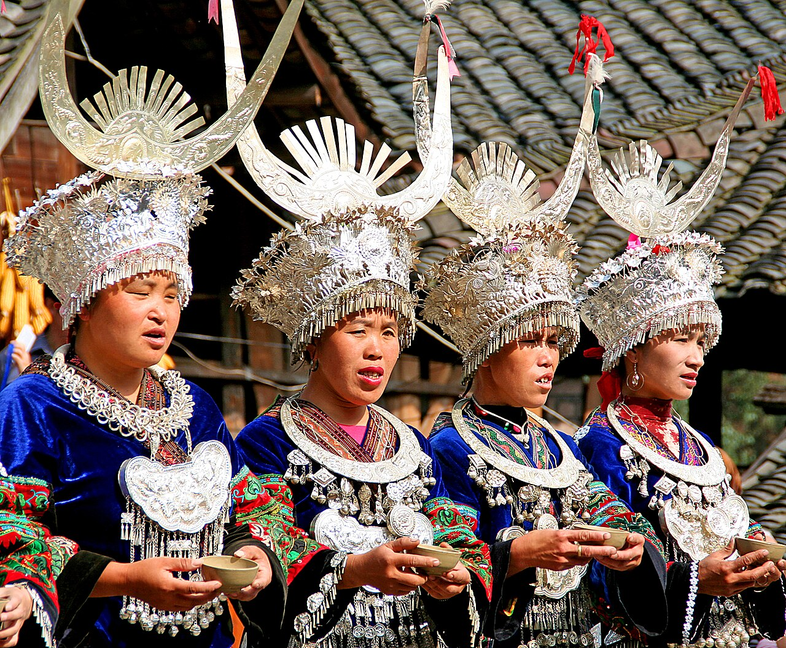
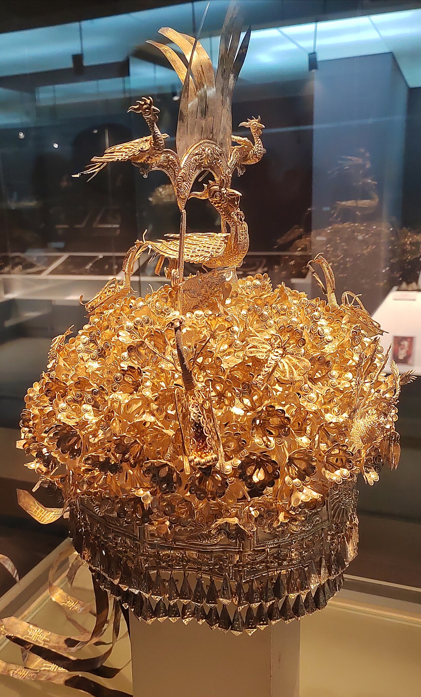
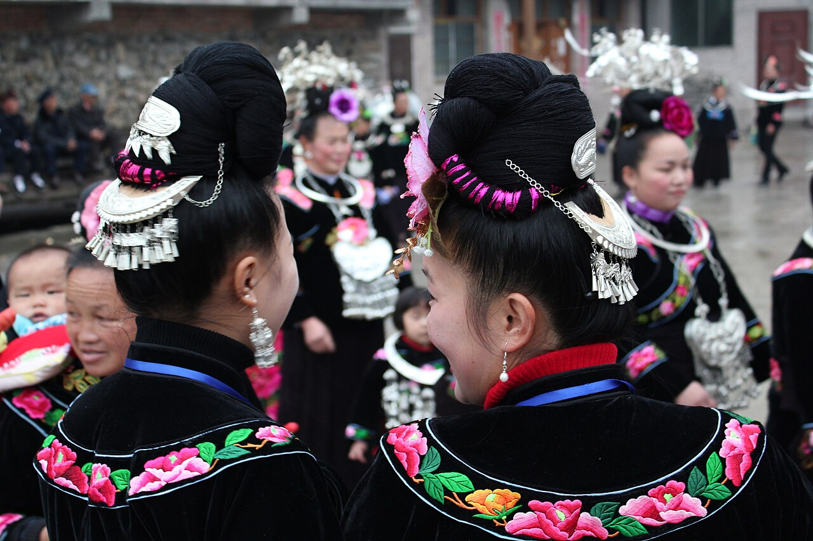

衣中有史
服饰，是可见的文化记忆
苗族支系众多，各地服饰在形制、色彩、刺绣和配饰上各具面貌。节庆盛装尤其集中呈现了织、染、绣与银饰制作等传统技艺。
网站以“形制—纹样—传承”为阅读路径，既观察服装的结构，也理解纹样与银饰背后的情感表达。页面内容参考中国非物质文化遗产网公开资料，并选用开放授权影像。

壹 HISTORY & FORM历史与形制观察衣、裙、头饰如何构成完整盛装
贰 PATTERN & SILVER纹样与配饰读懂刺绣中的自然意象与银饰之美
叁 LIVING HERITAGE文化传承在节日、工坊与当代生活中延续技艺传统之形 · 当代表达
“针线落处，是花鸟，也是故土；银饰响起，是装点，也是祝愿。”进入纹样图鉴